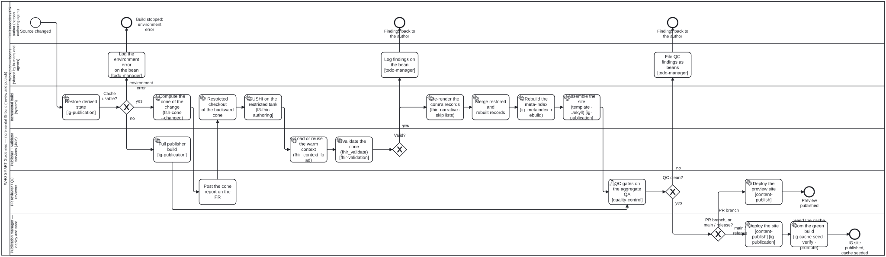

Generated from
fhir-harness/processes/content/ig-incremental-build.bpmnbygen-processes-viz.ts— do not edit here. All processes
Incremental IG build
Process_IgIncremental · advisory · 19 step(s)
A proposed incremental build for a WHO SMART Implementation Guide: compile, validate and re-render only the dependency cone of a change, then gate on QA and deploy. One change — a PR push or a push to main — through the incremental IG build proposed in issue #199: restore the derived state, compute the change’s dependency cone, compile and validate only the cone against the warm validator, re-render the cone’s records, rebuild the meta-index, assemble the site, gate on QA, then deploy — and, on main or a release only, seed the cache from the green build. A cache miss or a moved toolchain falls back to today’s full build; an environment error stops the run and logs why. Advisory, like the other content-type pipelines: the package that owns the content owns what adequate means.

How it connects
- Called by: no call activity names this process
- Calls: none
- Presented on: Authoring a WHO SMART IG (L3) — Making the build incremental
- Running instances: none recorded
Lanes — who acts
| lane | role | what it does here |
|---|---|---|
| FHIR modeller / PR author (person + authoring agent) | fhir-modeller | — |
| Work plan — beans (shared by humans and agents) | work-plan | Where every failure branch lands before the process ends rather than just stopping: Gateway_Valid’s no, Gateway_QcPass’s no and Gateway_Restore’s environment error each write here — Task_LogFindings, Task_QcBeans, Task_LogEnvError — before EndEvent_Findings, EndEvent_FindingsQc or EndEvent_EnvError, so a run that stops short always leaves a record of why rather than only a red check. |
| Incremental build (system) | build-pipeline | Owns everything that stays inside the cone: restore the cache, compute the cone, check it out, compile and re-render only that slice, then merge and rebuild the aggregates — Task_Index never re-derives an artefact on its own, so a missing record is a miss rather than a silent rebuild. What needs the JVM’s warm state, it hands to Lane_Services rather than running itself. |
| Publisher + validator services (JVM) | ig-publisher-service | Two separate duties rather than one: Task_FullBuild is the complete fallback the diagram takes when Gateway_Restore finds the cache unusable, bypassing the cone machinery and reaching Task_Qa on its own. Task_ContextLoad and Task_Validate are the other duty — holding the loaded dependency packages and expansions warm across runs is what makes validating a handful of cone files cheap, and losing that warm state is the same cache miss that routes to the fallback instead. |
| PR reviewer / QC reviewer | qc-reviewer | Sees the change’s shape before the build finishes — Task_ConeReport names what will rebuild and whether a shared hub is touched, posted while the checkout is still running — then gates on Task_Qa by reading the cone’s own rows in the aggregate first. On a PR branch it also deploys the preview itself, but never seeds the shared cache: that stays Lane_PubMgr’s, reached only past Gateway_Path on main or a release. |
| Publication manager — deploy and seed | publication-manager | Reached only past Gateway_Path’s main-or-release branch, never for a PR preview — which is what makes this the one lane allowed to touch the shared cache. Task_Seed does not seed on a green build alone: it writes to a -test branch and verifies a restore from a clean clone before promoting, so what licenses the shared cache is the verified restore, not the deploy that came before it. |
Steps
Every one of the 19 step(s) is documented.
| step | lane | skill / sub-process | what it does |
|---|---|---|---|
Restore derived stateTask_Restore | Incremental build (system) | ig-publication | ig-cache restore: per-artefact records, the terminology cache, the package cache and temp/, keyed by the toolchain slug. Exit 0 usable, 1 miss, 2 environment error, 3 present but toolchain moved. |
Log the environment error on the beanTask_LogEnvError | Work plan — beans (shared by humans and agents) | todo-manager | Exit 2 from restore: the cache store or the toolchain could not be reached. Record that on the change’s bean, with the restore output, so the work plan says the build did not run and why. Check before creating — beans create is not idempotent. |
Full publisher buildTask_FullBuild | Publisher + validator services (JVM) | ig-publication | Exit 1 or 3 from restore: the whole IG is built as today. Its outputs become the records the next seed writes. |
Compute the cone of the change (fsh-cone –changed)Task_Cone | Incremental build (system) | ig-publicationig-publicationig-publication | content/pipeline/fsh-cone.ts over the changed files: the forward cone is what to rebuild, the backward cone is what to check out. |
Post the cone report on the PRTask_ConeReport | PR reviewer / QC reviewer | quality-controlquality-controlquality-control | Review path: the reviewer sees what this change rebuilds — how many artefacts, and whether a hub (a shared RuleSet, CQL library or value set) is touched — before the build finishes. On main it is a log line. |
Restricted checkout of the backward coneTask_Checkout | Incremental build (system) | ig-publicationig-publicationig-publication | git sparse-checkout of the cone’s files plus sushi-config.yaml, ig.ini and the alias files — a median of three files, p90 eleven, measured on the SMART Immunizations IG. |
SUSHI on the restricted tankTask_Sushi | Incremental build (system) | l3-fhir-authoring | Compile the restricted checkout with SUSHI — the cone’s FSH, not the whole IG. A build optimisation, not a validation shortcut: SUSHI compiling is not conformance, so a green compile goes on to validation rather than standing in for it. |
Load or reuse the warm context (fhir_context_load)Task_ContextLoad | Publisher + validator services (JVM) | ig-publicationig-publicationig-publication | The validator’s server mode holds the loaded dependency packages, snapshots and expansions in its session cache. Cold start loads the restored derived FHIR rather than regenerating it. |
Validate the cone (fhir_validate)Task_Validate | Publisher + validator services (JVM) | fhir-validation | Validate the cone’s resources against the warm validator and report the cone that was checked. A validator that could not start is could-not-determine, never a pass with no findings. A green cone is not a green IG: a profile the change did not touch can still be broken by it. |
Log findings on the beanTask_LogFindings | Work plan — beans (shared by humans and agents) | todo-manager | Validation failed: record the findings on the change’s bean, so the work plan says what blocks it. Check before creating — beans create is not idempotent. |
Re-render the cone’s records (fhir_narrative · skip lists)Task_Render | Incremental build (system) | ig-publicationig-publicationig-publication | Narrative and fragments for the cone only: the publisher’s -no-validate / -no-narrative complements today, Rapido’s differential build once its tracker is persisted. |
Merge restored and rebuilt recordsTask_Merge | Incremental build (system) | ig-publication | Combine the restored per-artefact records with the cone’s freshly rendered ones into one complete set, so the meta-index rebuild that follows has every artefact’s record and never re-derives one. |
Rebuild the meta-index (ig_metaindex_rebuild)Task_Index | Incremental build (system) | ig-publicationig-publicationig-publication | The whole-IG aggregates only — artifacts, TOC, canonicals, expansions, package, QA aggregate. Never re-derives an artefact: a missing record is a miss (exit 1), not a silent rebuild. |
Assemble the site (template · Jekyll)Task_Site | Incremental build (system) | ig-publication | Assemble the site from the merged records: the IG template and a Jekyll build over output/. Only site assembly happens here — every artefact record already exists. |
QC gates on the aggregate QATask_Qa | PR reviewer / QC reviewer | quality-control | qa.json is the aggregate of per-artefact outcomes; the reviewer reads the cone’s rows first. |
File QC findings as beansTask_QcBeans | Work plan — beans (shared by humans and agents) | todo-manager | QC failed on the aggregate: file each finding as a bean, so it is tracked on the work plan rather than lost in qa.json. Check for an existing bean before creating one. |
Deploy the preview siteTask_DeployPreview | PR reviewer / QC reviewer | content-publish | A preview never seeds the shared cache. |
Deploy the site [content-publish]Task_Deploy | Publication manager — deploy and seed | content-publishig-publication | Deploy the site built from main or a release. Deploying is release-management, after a human authorised the release — an agent never records that authorisation. Report the published URL only once it answers: a returned deploy is not a serving site. |
Seed the cache from the green build (ig-cache seed · verify · promote)Task_Seed | Publication manager — deploy and seed | ig-publicationig-publicationig-publication | Only a green build of main or a release seeds. Seed writes to the -test branch, verifies a restore from a clean clone, then promotes. |
Decisions
Every one of the 4 decision(s) is documented.
| decision | what decides it | branches |
|---|---|---|
Cache usable?Gateway_Restore | Answered by the exit code of ig-cache restore (Task_Restore): 0 is a usable cache and takes yes, into the cone machinery. 1 (a miss) or 3 (present, but the toolchain moved) takes no, to the full publisher build, whose outputs become the records the next seed writes. Exit 2 (an environment error — the cache could not be read, which says nothing about whether it is usable) takes environment error: the run stops and the error is logged, rather than falling back to a full build that would hide a broken cache store behind a slow green run. | yes → Compute the cone of the change (fsh-cone –changed) no → Full publisher build environment error → Log the environment error on the bean |
Valid?Gateway_Valid | Answered by Task_Validate — the cone’s resources checked against the warm validator. yes goes on to re-render the cone’s records. no logs the findings on the change’s bean and returns them to the author. A validator that could not start is could-not-determine, which Task_Validate’s documentation says is never a pass, so it does not take yes; and a green cone is not a green IG, since a profile the change did not touch can still be broken by it. | no → Log findings on the bean yes → Re-render the cone’s records (fhir_narrative · skip lists) |
QC clean?Gateway_QcPass | Decided in the reviewer’s QC gate (Task_Qa, quality-control) over qa.json, the aggregate of per-artefact outcomes, reading the cone’s rows first. no files each QC finding as a bean, checking for an existing one first, and returns the findings to the author. yes goes on to deploy. | no → File QC findings as beans yes → PR branch, or main / release? |
PR branch, or main / release?Gateway_Path | Answered by the push that started the process. PR branch is the review path: deploy the preview, which never seeds the shared cache. main / release is the publish path: deploy the site after a human has authorised the release, then seed the cache, which writes to a -test branch, verifies a restore from a clean clone, and only then promotes. Only this branch reaches the lane allowed to touch the shared cache. | PR branch → Deploy the preview site main / release → Deploy the site [content-publish] |